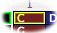
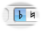
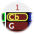
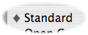
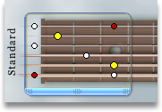
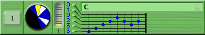

This tutorial demonstrates how to build a short composition in FretPet. When you have completed this tutorial you should be fully prepared to start making your own original compositions.
The Lesson Plan
| Use FretPet's built-in Tooltips if you're not sure what something is. Hold the mouse over any item in the FretPet interface and a tooltip will appear containing the item's name. Press ⌘ to view an extended tooltip with more details about the item. |
1. Make a simple chord triad
A. In the Scale Palette set the Current Mode to Ionian (Major) using the Scale Arrows at the top of the palette. |
|
B. Put the Scale Cursor on the C tone in the first step of the C scale by clicking on the C in the second column of the first row. This is the first tone in the C scale. |
 |
C. Click the Triad Button in the Toolbar. |
|
D. At the top of the Chord Palette the tones of the chord (C E G) are displayed. Directly below that you will see the name of the chord. These three notes are most readily called a C chord. Click the Disclosure Triangle to see all the other names for this combination of tones. |
MINOR SCALE EXAMPLE
| If you set the scale to | |
| then when you press | |
| you get | |
|
( which is a Cm chord ).
|
NOTE MODIFIER EXAMPLE
| If you set the Note Modifier to |  |
| the Scale Tone changes to |  |
| Then when you press | |
| you get | |
| which is a Cb (B) chord. |
NUMERICAL TONES
| When you click on the Roman Button in the Toolbar | |
| becomes | |
| which means that the chord has a Root, a Major 3rd, and a Perfect 5th. |
2. Choose a fingering on the fretboard
Look at the Guitar Palette. The notes of our chord are shown on the guitar as colored dots. There is a Fret Bracket along the left edge of the neck which represents the guitarist's stretch. This bracket can be moved and resized to choose any range of frets. As you move the bracket, fingerings are automatically calculated for you.
| We're using standard tuning for this example so make sure it's selected in the submenu. |  |
| Slide the Fret Bracket to the very top of the neck (or the very left in horizontal mode) and stretch it so that it encompasses the open string (Fret 0) and the first 3 frets. |  |
| Yes! You can override the fingering automatically selected by the Fret Bracket. Just ⌥ click or click-and-hold on any red dot to select it. |
3. Listen to the chord
Press the Hear Button in the Toolbar. The chord is played according to the fingering you've created. Try moving the Fret Bracket around and press the Hear Button again to see the effect.
4. Store the chord in the document
Click the Add Chord Button in the Toolbar. The chord is added to the document. In the document your chord appears as a rectangular box with the name of the chord, a small circular representation, and numeric tablature that corresponds to the fretted notes in the Guitar Palette.
5. Make a picking pattern

Every chord has its own picking-pattern sequencer that extends the tablature into a time-line grid. Time proceeds from left to right according to the tempo set at the top of the document window. Each of the darker tick marks - every fourth one - represents a whole "beat." At the default rate of 120 BPM each dark tick-mark in the sequencer represents 1/120th of a minute, or a half second.
Make a simple picking pattern in the sequencer by clicking in the grid. As each tone is added to the sequence you hear the tone. Notice also that the corresponding tone in the Guitar Palette lights up.
You can grab the right end of the Sequencer - the Sequence Sizer - and drag it to change the length of the sequence. You can change the number of times your sequence will repeat by clicking in the vertical Repeat Slider.
6. Listen to the pattern while editing
Press the Play Button in the Toolbar. The sequence plays from beginning to end and stops. Click on the Loop Button in the Toolbar. Now when you click Play the chord plays continuously.
Click on the Follow View Button to turn on "Follow View." Now as each chord plays it is selected in the sequencer, which gives helpful visual feedback and updates the various palettes.
If you try to edit the sequence at this point you are not allowed. This is because Follow View is always highlighting the next chord in line, just when you might try to edit it. Fortunately, there are two options which allow you to edit sequences as they play.
- Turn off Follow View. This allows you to edit all you want.
- Turn on Edit Mode by clicking the toolbar button with the image of a pencil. In Edit Mode play is constrained to the selection, so you can edit patterns and select groups of chords to hear how they sound without interrupting playback.
7. Make a copy of the chord
Click the Add Chord Button in the Toolbar (or better yet, press the A key) to make a copy of the selected chord. The visible selected chord and its counterparts are duplicated exactly and placed on the following line.
| The document has 4-Part Multi-tracking. This means some operations that affect chords in one part may also affect their counterparts in other Parts. See All About Parts for more details. |
8. Modify the chord in the Circle Palette
The Circle Palette is useful for making simple coherent changes to chords. Here you can add and remove tones, transpose chords to other keys, and choose other harmonies in the current scale with ease. The circle is color-coded in the same way as the Scale Palette for quick selection of major, minor and diminished harmonies.
Click on the Harmonize Up arrow 5 times. Each time you click on this button all the notes in the Current Chord are moved to their adjacent tone in the scale. Listen carefully to the chord as it moves through the harmonies. After clicking this button 5 times you will have an A minor chord.
You can also click any of the seven Harmony Buttons to instantly select a chord harmony. Try clicking these buttons at random, pressing the A key after each click. This will quickly produce a coherent chord progression.
9. Improvise
Press the Play Button in the Toolbar and turn off Edit Mode. Now both chords play in succession. Adjust the Tempo, Velocity, and Sustain while these chords play until you have a cool sound.
It is possible to perform lengthy improvisations with only a few chords, some good rhythms, and the Circle Palette. Try clicking around inside the Circle Palette during playback and discover how quickly your music can begin to take shape.
10. Add a bass line
Click on Part Tab 2 at the top of the document. This selects the second part in the composition. All the chords in this part should match the chords in the first part.
Create a picking pattern with only a few notes spaced far apart, perhaps one on every fourth beat. This will serve as the bass-line. Usually the bass-line of a song is played an octave or two below the guitar. Experiment with different instruments until you find something that sounds excellent.
Conclusion
That concludes our tutorial. You should now be able to build chord progressions like an expert... or at least you're on your way. There are many resources I haven't discussed here, such as the fabulous Filters menu and the helpful Direct Transform mode. Most program commands are pretty obvious after you've tried them a few times. You can always refer back to the manual if something confusing crops up.